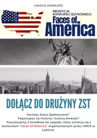
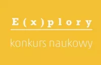
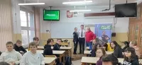

OGŁASZAMY NABÓR DO KONKURSU „FACES OF AMERICA”Biuro Promocji i Popularyzacji Nauki UMCS oraz Centrum Nauczania i Certyfikacji Języków Obcych UMCS serdecznie zapraszają uczniów szkół ponadpodstawowych z całego kraju do uczestnictwa w VIII edycji Konkursu Językowego „Faces of America", który odbędzie się 21 marca 2023 r. na Uniwersytecie Marii Curie-Skłodowskiej w Lublinie. Konkurs Językowy „Faces of America" jest unikalnym na skalę kraju wydarzeniem, którego głównym celem jest promowanie znajomości języka angielskiego i podniesienie poziomu umiejętności językowych wśród uczniów szkół ponadpodstawowych, a także popularyzowanie szeroko rozumianej wiedzy na temat kultury amerykańskiej. |
 |
Uczniowie ZST w regionalnym etapie konkursu naukowego ExploryProjekt naukowy uczniów ZST Sebastiana Golby i Mariusza Jacka zakwalifikował się do drugiego etapu prestiżowego konkursu Explory. Nasz projekt o nazwie „System Rozszerzonej Rzeczywistości Wspomagający Osoby Niedowidzące” jest w grupie wybranych 140 spośród 289 zgłoszonych pomysłów. W dniach 31.05 – 2.06 uczniowie będą prezentować swój projekt w formie transmisji online oraz walczyć o przejście do ogólnopolskiego finału. |
 |
Spotkanie ze studentami pilotażu z Państwowej Akademii Nauk Stosowanych w ChełmieW dniu 4 stycznia 2023 r. w naszym Technikum odbyło się spotkanie z Kingą Wilk i Miłoszem Dydo, którzy studiują w Państwowej Akademii Nauk Stosowanych w Chełmie na kierunku Inżynieria Lotnicza ze specjalizacją pilotaż samolotowy. Gospodarzem spotkania była klasa 4LCg wraz z wychowawcą Jarosławem Szczerbą. Młodzi piloci zaprezentowali się w mundurach i przedstawili swoją uczelnię naszym tegorocznym maturzystom, zachęcając ich do podjęcia dalszego kształcenia na kierunkach, takich jak na przykład: mechanika lotnicza czy inżynieria lotnicza ze specjalizacją pilotaż samolotowy, śmigłowcowy lub dyspozytor lotniczy. Nasi uczniowie mieli okazję oglądnąć film promocyjny oraz poznać poszczególne kierunki, zasady rekrutacji oraz możliwości, jakie oferuje PANS Chełm. Studenci opowiedzieli również o swoich doświadczeniach lotniczych oraz o etapach szkolenia pilotów. |
 |